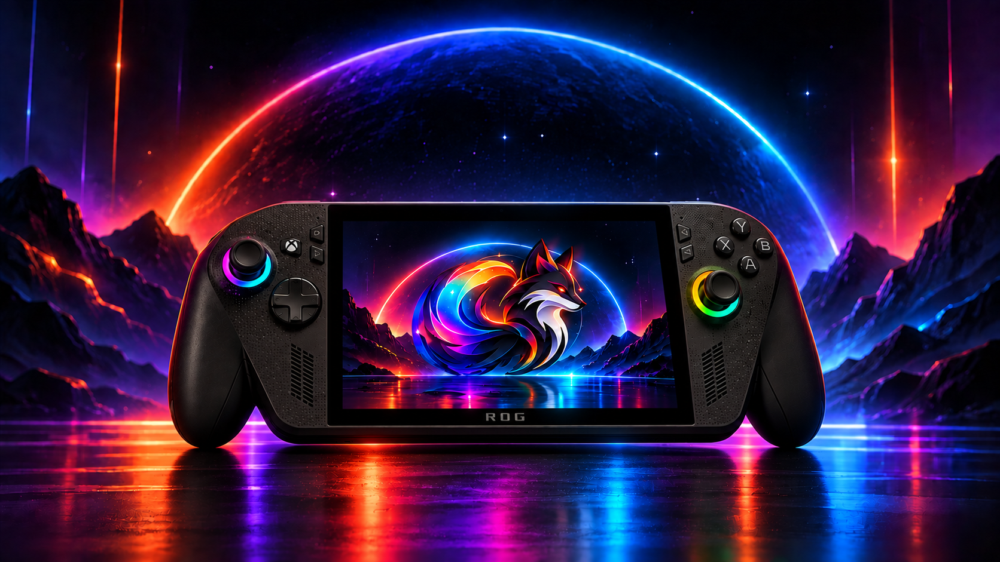
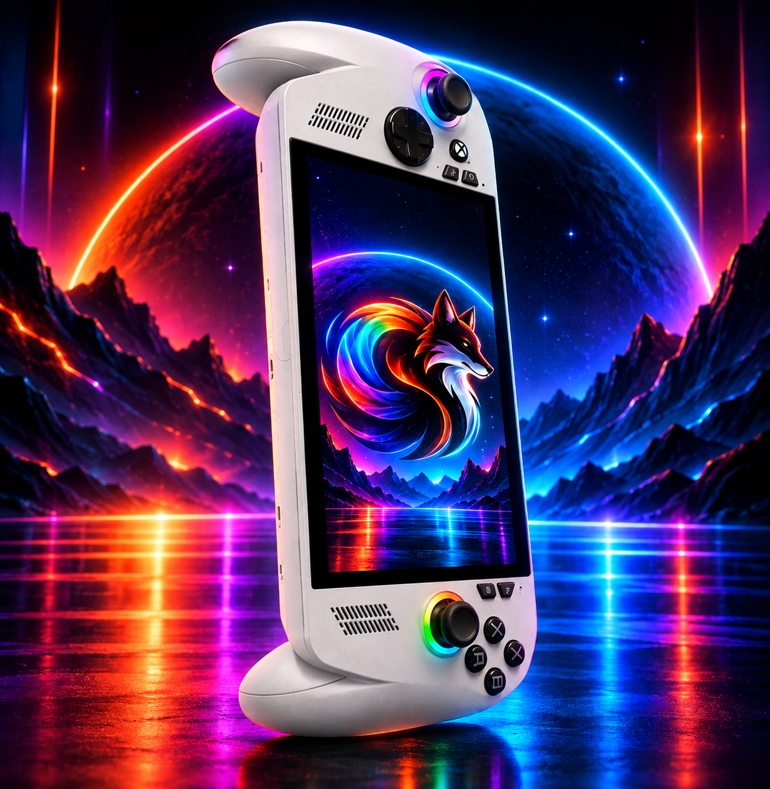
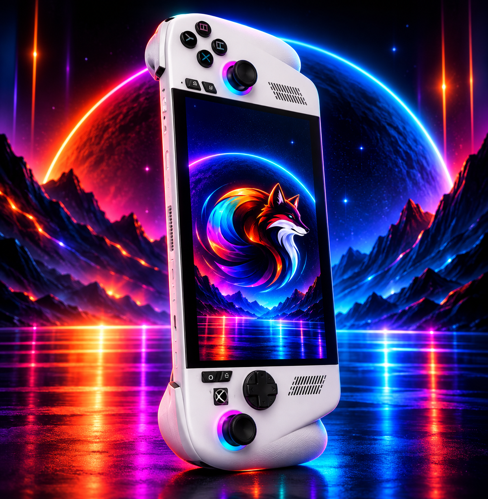
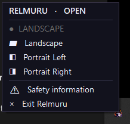

No reemplaces Windows.
Adáptalo.
Relmuru adapta Windows a la forma física en que utilizas tu handheld. Pasa de una experiencia tradicional en Landscape a Portrait cuando quieres usarla como una tablet Windows, y vuelve con la misma facilidad.

Gaming Handheld ⇄ Windows Tablet
Una handheld con Windows puede ser más que una consola portátil. Relmuru hace cómodo alternar entre Landscape, Portrait Left y Portrait Right sin intentar reemplazar Windows ni imponer una interfaz nueva.
Dos acciones.
Tres orientaciones.
Rotate Left y Rotate Right permiten recorrer de forma natural los estados Landscape, Portrait Left y Portrait Right.
La orientación guardada por Windows permanece intacta.
Los cambios realizados por Relmuru son temporales. Si Windows está configurado para iniciar en Landscape, un reinicio vuelve a esa orientación guardada aunque hayas usado Portrait durante la sesión.


Tus botones.
Tu forma de cambiar.
Relmuru registra atajos globales de Windows. Si el software de tu handheld puede asignar un botón físico a una combinación de teclado, puede utilizar esos atajos para controlar la rotación.
Relmuru no controla botones específicos ni depende de un fabricante. La integración ocurre a través del software de la handheld cuando este puede enviar combinaciones de teclado.
Diseñado para convivir con tu dispositivo.
Usa el software de control que ya acompaña a tu handheld para mapear sus botones disponibles a los atajos de Relmuru. Sin controladores propios ni integración exclusiva con una marca.
Ábrelo cuando lo necesites.
No antes.
Relmuru nunca se inicia automáticamente con Windows. Tú decides cuándo abrirlo. Mientras está activo, vive discretamente en la bandeja del sistema y mantiene disponibles los atajos globales.
- La X oculta la interfaz sin cerrar Relmuru.
- La bandeja del sistema permite volver a abrir la ventana.
- Desde la bandeja puedes cambiar la orientación, consultar la información de seguridad o salir completamente.

Portrait cambia cómo sostienes tu handheld.
Al girar físicamente un dispositivo, tus manos, ropa o accesorios pueden quedar cerca de sus entradas y salidas de aire. Relmuru incluye un recordatorio de seguridad para mantener la ventilación libre y seguir las recomendaciones térmicas del fabricante.
Relmuru no modifica ventiladores, TDP, controles térmicos ni sistemas de refrigeración.
Simple por fuera.
Útil cuando giras la pantalla.
Referencias visuales de Relmuru en Landscape, Portrait y su menú real en la bandeja del sistema.
Gratis. Sin publicidad. Sin suscripción.
Sin cuentas, compras dentro de la aplicación ni versión Pro. Relmuru funciona localmente en Windows 10/11.